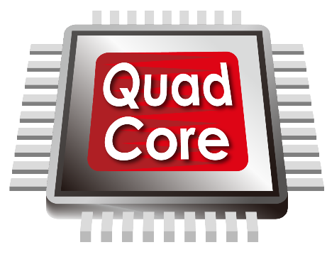

|
|
| FORM PEMBELIAN KOMPUTER DISINI!! |
Quad-core CPU
|
Quad-core CPU adalah prosesor dengan empat inti atau core di dalam satu chip prosesor. Setiap inti pada quad-core CPU memiliki kemampuan untuk mengeksekusi instruksi secara independen, yang memungkinkan prosesor ini menangani banyak tugas secara simultan. Dengan adanya empat inti, CPU ini memiliki keunggulan signifikan dalam hal multitasking dibandingkan dengan prosesor single-core atau dual-core, karena setiap inti dapat menjalankan proses atau thread terpisah, mengurangi waktu yang dibutuhkan untuk menyelesaikan tugas kompleks. Keberadaan beberapa inti dalam quad-core CPU menjadikannya pilihan ideal untuk aplikasi yang membutuhkan daya komputasi tinggi, seperti pengeditan video, rendering 3D, dan gaming. Dalam situasi di mana perangkat lunak atau sistem operasi mendukung pemrosesan paralel, quad-core CPU dapat meningkatkan kinerja secara substansial. Namun, kemampuan ini juga bergantung pada perangkat lunak yang digunakan, karena aplikasi yang tidak dioptimalkan untuk penggunaan multi-core mungkin tidak mendapatkan manfaat penuh dari keempat inti prosesor. |
 |